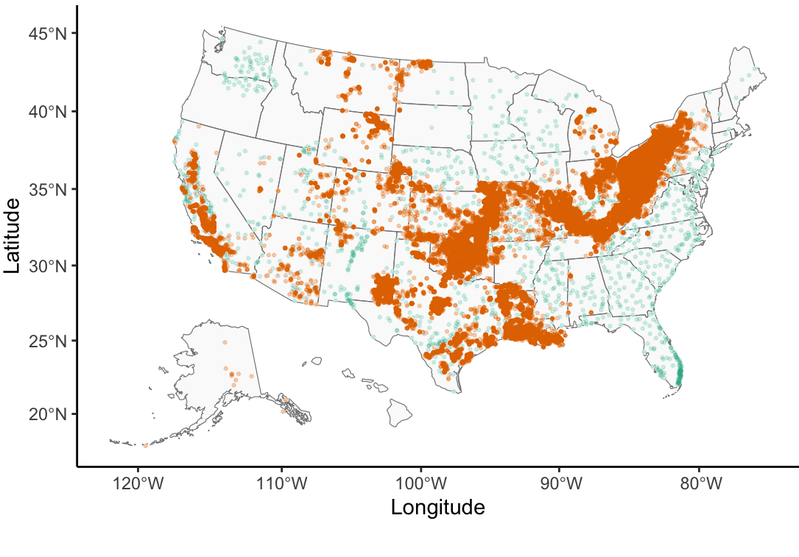
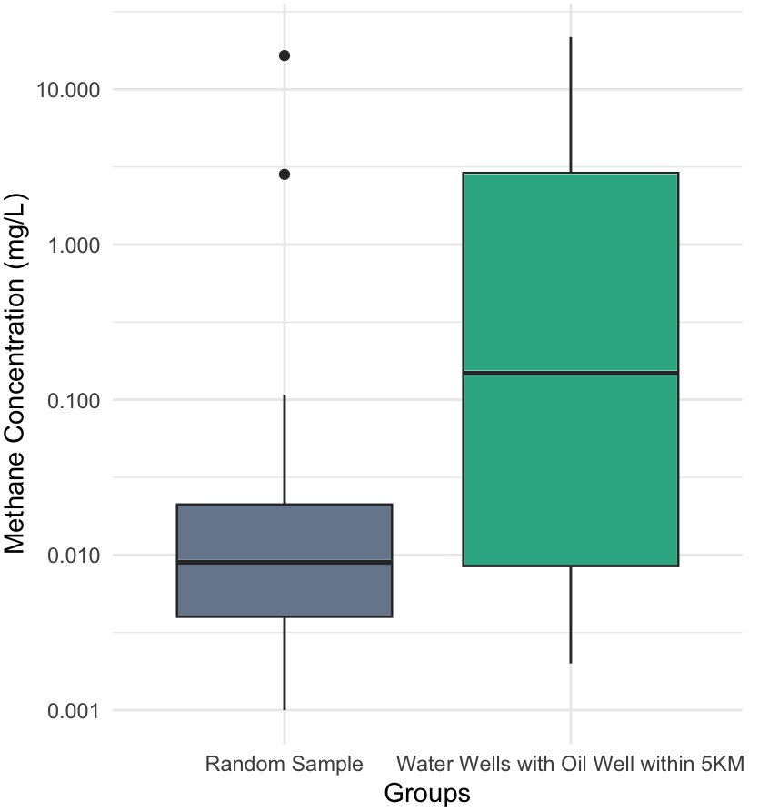
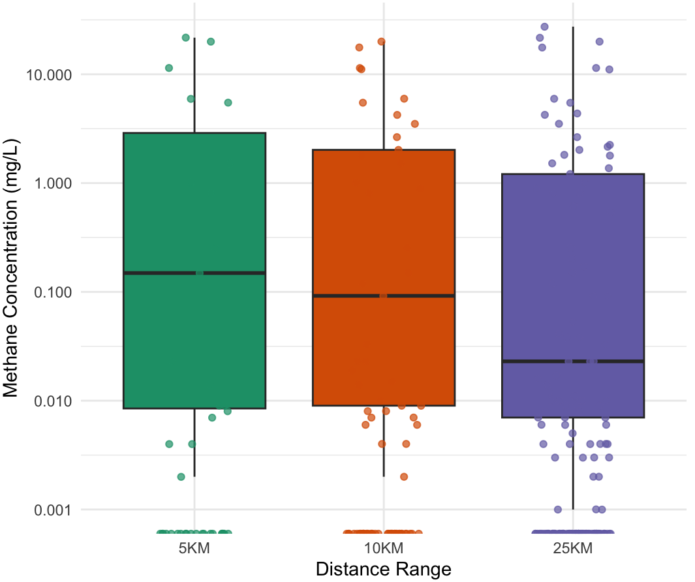

The Unplugged Legacy of U.S. Oil & Gas Extraction
Across the United States, more than 117,000 documented orphaned oil and gas wells—and an estimated hundreds of thousands of undocumented historical boreholes—sit unplugged with no solvent operator of record. As steel casings corrode and cement annuli fracture over decades, abandoned wellbores can act as vertical conduits connecting deep hydrocarbon-bearing formations with overlying fresh drinking-water aquifers.
While dissolved methane (CH4) in groundwater is non-toxic to ingest, concentrations exceeding 10–28 mg/L pose acute exsolution, asphyxiation, and explosion hazards in enclosed domestic water systems, and oxidize into potent greenhouse emissions.
Do groundwater monitoring wells located within 5 km to 25 km of documented orphaned oil and gas wells exhibit significantly elevated dissolved methane concentrations compared to the national baseline?
Coordinate Standardization & Nearest-Neighbor Buffering
DerelictWell.csv (N = 117,672) for verified geographic coordinates across 27 oil-producing states.
McMahon_Table1.csv (N = 2,062) to decimal degrees, replacing censored non-detects (< 0.001 mg/L) with numeric detection thresholds.
sf + nngeo): Projected both point layers to EPSG:4326 (WGS 84) and computed exact k-nearest-neighbor geodesic distances via st_nn(maxdist = 5000 | 10000 | 25000).
ne_50m_admin_1_states_provinces.shp).
Documented orphaned wells cluster intensely along historical extraction corridors: the Appalachian Basin (PA, WV, OH, NY, KY), the Mid-Continent & Permian Basins (OK, KS, TX, LA), the Illinois & Michigan Basins, and California's Central Valley & Los Angeles Basin. While USGS NAWQA water sampling provides broad national coverage, spatial overlap between both monitoring networks is concentrated in Pennsylvania, New York, Texas, Oklahoma, and California.
| Buffer Radius | Median CH₄ | IQR Spread | Max Obs. |
|---|---|---|---|
| ≤ 5 km (●) | 0.150 mg/L | 0.008–2.85 | 23.4 mg/L |
| ≤ 10 km (●) | 0.092 mg/L | 0.009–2.01 | 21.8 mg/L |
| ≤ 25 km (●) | 0.023 mg/L | 0.007–1.20 | 28.9 mg/L |
| Random Baseline | 0.009 mg/L | 0.004–0.021 | 17.0 mg/L |
Why Surface Proximity Alone Does Not Predict Aquifer Methane
1. Biogenic vs. Thermogenic Methane Origins
McMahon et al. (2017) demonstrated through isotopic analysis (δ13C-CH4) that over 90% of methane detections in principal U.S. aquifers are microbially generated (biogenic) in anoxic subsurface strata rather than thermogenic gas migrating from deep oil reservoirs.
2. Subsurface Depth & Wellbore Integrity Confounders
2D Euclidean surface distance omits vertical separation between screen depth and hydrocarbon formations, local hydraulic head gradients, fault permeability, and whether an orphaned well retains intact surface casing.

Two-sided Wilcoxon–Mann–Whitney
W = 702.5, p = 0.5789
Result: p > 0.05 (Fail to reject H0)
Visual vs. Statistical Divergence: Drinking-water wells within 5 km of an orphaned oil well (emerald box) exhibit an order-of-magnitude higher visual median (≈ 0.15 mg/L) and a wider interquartile range reaching 2.85 mg/L compared to the national random sample (slate box, median ≈ 0.009 mg/L).
However, because a large fraction of wells in both groups remain near the 0.001 mg/L detection floor, the overall rank-sum distribution does not achieve statistical significance (p = 0.579).

Spearman's ρ = −0.0137
p-value = 0.8222
Palette: ColorBrewer
Dark2
Monotonic Decay in Medians: Across expanding geodesic buffers, the median concentration among detected wells steps downward from 0.15 mg/L (5KM) to 0.092 mg/L (10KM) and 0.023 mg/L (25KM).
Heavy Censoring at Detection Limit: Jittered observations along the 0.001 mg/L baseline reveal why Spearman's ρ = −0.0137 (p = 0.822) is near zero: uncontaminated wells dominate all three distance rings, masking localized point-source plumes.